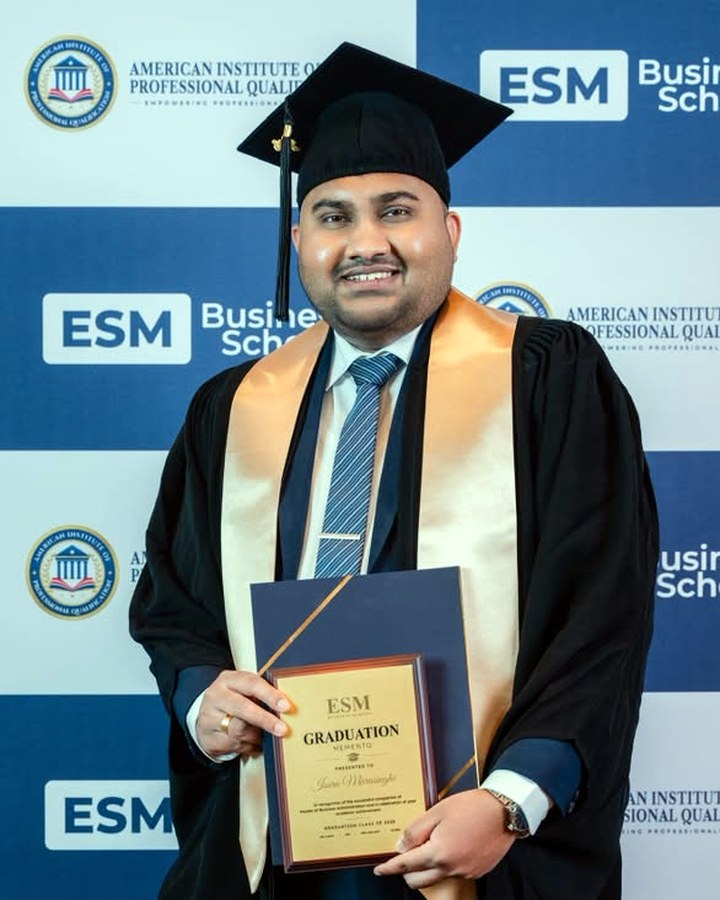

Isuru Marasinghe
A strategic, performance-driven marketer who builds and scales data-driven digital ecosystems. Over USD 61.5 million in revenue generated for clients to date, across real estate, education, technology and FMCG.
- MBA (UK)Master of Business AdministrationUniversity of Gloucestershire, United Kingdom
- ACIM (UK)Associate, Chartered Institute of MarketingUnited Kingdom
- PgDip.M (UK)Postgraduate Diploma in Professional MarketingChartered Institute of Marketing · Level 7
- AMSLIM (SL)Associate Member, Sri Lanka Institute of Marketing
- CLSSWBCertified Lean Six Sigma White Belt
- CDMP (USA)Certified Digital Marketing PractitionerAmerican Institute of Professional Qualification
- BM (Hons)BM (Hons) in Marketing, First ClassHorizon Campus, Sri Lanka
Full stack, by necessity
I came up doing every part of the job rather than one slice of it, which is why the work spans creative, media, measurement and lifecycle instead of stopping at the ad account. Real estate, education, technology and FMCG all turned out to need the same thing: somebody who could see the whole funnel at once and was willing to be judged on what came out of the end of it.
That perspective is the point. A media buyer who cannot direct creative is at the mercy of whatever arrives. A strategist who has never built the tracking does not know which numbers to trust. Holding all of it means the plan and the execution answer to each other.
Analytical precision, creative storytelling
I design high-converting performance funnels, run paid media across Meta, Google, TikTok, LinkedIn and Snapchat, and optimise the SEO, CRM and lead flow behind them so the account beats its ROAS and conversion benchmarks rather than explaining why it did not.
The half that gets neglected is the storytelling. Targeting is largely automated now; what is left for a marketer to decide is what the ad says and how it says it in the first three seconds. So the analysis sets the direction and the creative does the work, which is how brands end up connecting with an audience instead of merely reaching one.
Underneath both sits a bias toward measurement. An account optimising against a badly mapped event gets worse the more you spend on it, so the tracking comes first and the media second. That is unglamorous and it is where most of the recoverable performance hides.
Judged on what closed
Platforms report on what they can see and agencies report on what flatters them, which leaves the number everyone quietly avoids: what the spend actually turned into. The accounts here are reported past the click.
On the real-estate pipeline that meant matching CRM stages back to the ad sets that created them, so AED 440,000 of media could be stated against AED 134,417,569 of closed property rather than against a cost per lead. It is a harder number to produce and the only one worth putting in front of a client.
Core competencies
Where the work happens
I am Sri Lankan, I live in Dubai, and the client base has never been limited to either. Paid media runs from the platforms rather than from a desk in a particular city, so the practical constraint is the working day, not the map. Dubai overlaps the UK morning, the whole of South Asia and the start of the US east coast, which covers most of where clients have been.
What does not travel is local knowledge. A cost per lead that looks strong in Colombo means something different in Dubai, so accounts spanning both are read per market rather than blended into one flattering average. Several of the education and migration brands do exactly that: selling into one market and delivering in another.
Qualifications
MBA (UK), ACIM (UK), PgDip.M (UK), a postgraduate diploma in strategic management and leadership, AMSLIM (SL), Certified Lean Six Sigma White Belt, CDMP (USA) from the American Institute of Professional Qualification, and a first-class BM (Hons) in Marketing from Horizon Campus, Sri Lanka.
Fifteen platform and institute certifications sit alongside those: Meta Certified Digital Marketing Associate and Creative Strategy Professional, Microsoft Advertising Search and Retail, Apple Ads, LinkedIn Certified Marketing Insider and the rest, listed with the badges on the home page.
Where they came from

Let's talk.
Thirty minutes, no charge, in whichever time zone suits.